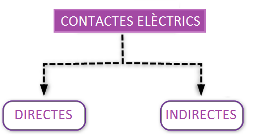
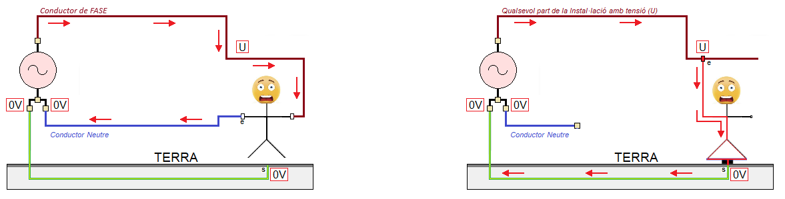
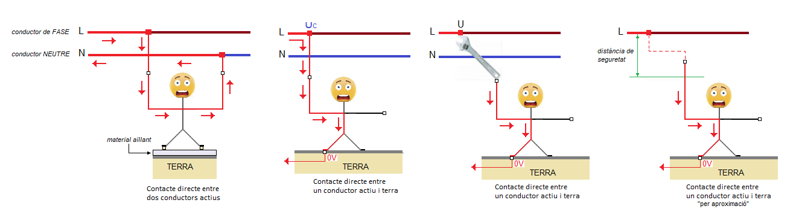
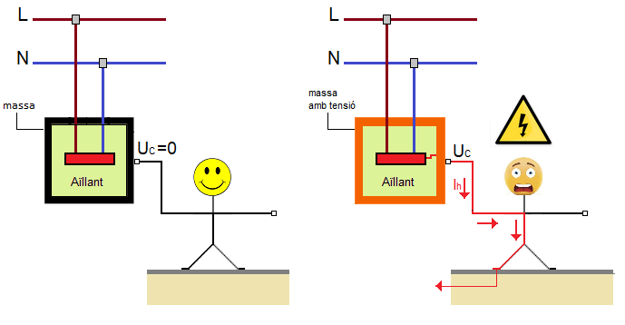

Els contactes Elèctrics es classifiquen en:

Els contactes Elèctrics es classifiquen en:

Un contacte elèctric implica que hi hagi una circulació de corrent pel cos humà, es a dir, que aquest forme part d'un circuit elèctric (veure imatge):


El contacte elèctric directe és aquell que es produeix en tocar directament (o aproximar-se el suficient) a parts actives dels materials i equips.
L'expressió "tocar directament" inclou també que el contacte elèctric el face, per exemple, una ferramenta conductora que tenim subjecta per la ma o una màquina que estem conduint. A continuació podem veure alguns vídeos on es produeixen aquests tipus d'accidents:
Es consideren parts actives els conductors i peces conductores en servei normal, incloent el conductor de neutre i les parts a ell connectades.
S'anomena massa a qualsevol part metàl·lica accessible d'un receptor elèctric i que en condicions normals de funcionament es troba sense tensió.

Es produeix un contacte elèctric indirecte quan una persona entra en contacte amb una massa d'un receptor elèctric que accidentalment s'ha posat sota tensió com a resultat d'un deteriorament de l'aïllant del receptor elèctric.
Llicenciat sota la Llicència Creative Commons Reconeixement CompartirIgual 4.0